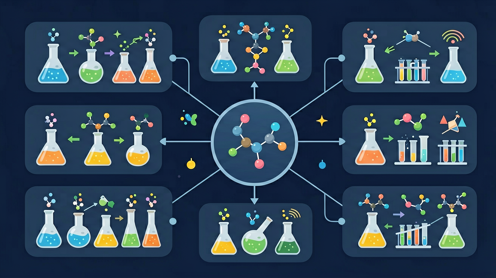

真实情境
实验室中的有机合成实验
在化学实验室中，学生正在进行乙酸乙酯的合成实验。他们需要将乙酸和乙醇在浓硫酸催化下加热反应，观察反应过程中断键和成键的变化。
已有经验
学生已经学习了乙酸和乙醇的结构式，知道它们都是有机化合物。
真正卡点
学生容易混淆取代反应和加成反应，不清楚如何通过断键和成键来判断反应类型。
本课任务
通过观察乙酸乙酯合成实验，分析反应过程中断键和成键的变化，判断反应类型。
判断有机反应类型时，为什么看结构变化比背反应名称更可靠？

先选一个你关心的问题。后面的例子、提示和 AI 学伴都会围绕这个问题来帮你推进。
选择或输入后，本课会围绕你的问题展开。
在化学实验室中，学生正在进行乙酸乙酯的合成实验。他们需要将乙酸和乙醇在浓硫酸催化下加热反应，观察反应过程中断键和成键的变化。
学生已经学习了乙酸和乙醇的结构式，知道它们都是有机化合物。
学生容易混淆取代反应和加成反应，不清楚如何通过断键和成键来判断反应类型。
通过观察乙酸乙酯合成实验，分析反应过程中断键和成键的变化，判断反应类型。
取代反应中有机分子里的某原子或原子团被其他原子或原子团替换，如烷烃卤代、苯的硝化、酯化（属取代）。特点是“换下来、补上去”，常生成小分子副产物（如 HX、H₂O）。判断反应类型先看键的变化与产物。
下列属于取代反应的是？
加成反应中不饱和键（双键、三键）打开，两端各加上原子或原子团，无小分子生成。加聚反应是许多单体通过加成连成高分子，如乙烯加聚成聚乙烯。含双键、三键的物质易加成，可用溴水/酸性高锰酸钾检验不饱和性。
乙烯生成聚乙烯的反应类型是？
有机氧化常表现为加氧或去氢（如醇→醛→酸），还原常为加氢或去氧。醛既可被氧化（银镜反应）又可被还原（加氢成醇）。判断氧化还原看碳的化合价或氢氧原子数变化。
乙醇催化氧化成乙醛属于？
本课任务：用分子模型区分单键与不饱和键的几何，整理取代/加成/加聚/氧化还原四类有机反应的判据与实例表。
写清自变量、因变量和至少两个保持不变的条件，避免同时改变多个因素后无法归因。
至少记录三组带单位的数据或三个可复查的现象，不用“变大了”“更明显”代替证据。
用本课公式、粒子模型或受力关系解释趋势，并指出结论成立所依赖的模型条件。
换一个参数或真实情境预测结果，再用仿真检验；若不一致，回查变量、单位和边界条件。
乙烯与溴水反应主要属于？
加成通常打开不饱和键；消去则脱去小分子形成不饱和键。
取代是原子或基团被替换，卤代烃和酯的水解都可视为重要转化。
氧化常改变含氧官能团层级；酯化是羧酸与醇生成酯和水。
常见类型：取代、加成、消去、氧化、还原、加聚、缩聚、酯化、水解等。判断要看断哪些键、形成哪些键，而不是只看名称。同一原料条件不同产物可能不同。
加成：不饱和键变饱和；消去：从分子中脱去小分子形成不饱和键；取代：原子或原子团互换；加聚：双键打开连成高分子。写方程式标条件。
常见误区：常见误区是只背反应名称，不看条件导致水解与消去混淆。
乙烯与溴的反应属于？
记忆锚点：有机反应看三件事：断哪根键，进哪个基团，官能团升降级没有。
易错提醒：常见错误：看到 Br 就都叫取代。烯烃与 Br₂ 通常是加成，烷烃光照卤代才是取代。
理解有机化学反应类型判断的核心依据，掌握通过分析化学键断裂与形成位置来区分取代、加成等反应类型的能力
乙烯与溴的四氯化碳溶液反应时，红棕色迅速褪去（加成反应），而乙烷与溴蒸汽需光照且生成溴化氢（取代反应），对比证明反应条件决定键断裂方式
先标出反应物所有官能团，用不同颜色标注断键位置，再追踪成键原子形成的新键类型与位置
将乙醇170℃脱水生成乙烯（消去反应）与140℃生成乙醚（取代反应）混淆，忽略温度对断键方式的关键影响
课堂任务：请用“现象/文本/地图/实验数据 → 关键证据 → 学科解释 → 迁移应用”四步，重写一个关于「有机反应类型：看断键和成键，而不是背名字」的新问题。
不要只看结论。动手改变变量后，再用一句话解释画面为什么变了。
识别并写出本节核心定义、公式或分类标准。
把本课标准用于一个实验数据或真实生活场景。
设计一个反例，说明常见错误为什么站不住脚。
如果你能解释“判断有机反应类型时，为什么看结构变化比背反应名称更可靠？”，这节课就真正过关了。